- In this case study, we are interested to examine the spatial pattern of a selected development indicator (i.e.GDP per capita) of Hunan Provice, People Republic of China.
1. Install Packages
packages = c('sf', 'spdep', 'tmap', 'tidyverse')
for (p in packages){
if(!require(p, character.only = T)){
install.packages(p)
}
library(p,character.only = T)
}
2. Import data, performe relational join and peek the indicator
hunan <- st_read(dsn = "data/shapefile",
layer = "Hunan")
Reading layer `Hunan' from data source
`C:\yiling-yu\IS415_Blog\_posts\2021-09-27-hands-on-exercise-7\data\shapefile'
using driver `ESRI Shapefile'
Simple feature collection with 88 features and 7 fields
Geometry type: POLYGON
Dimension: XY
Bounding box: xmin: 108.7831 ymin: 24.6342 xmax: 114.2544 ymax: 30.12812
Geodetic CRS: WGS 84hunan2012 <- read_csv("data/attribute/Hunan_2012.csv")
hunan <- left_join(hunan,hunan2012)
equal <- tm_shape(hunan) +
tm_fill("GDPPC",
n = 5,
style = "equal") +
tm_borders(alpha = 0.5) +
tm_layout(main.title = "Equal interval classification")
quantile <- tm_shape(hunan) +
tm_fill("GDPPC",
n = 5,
style = "quantile") +
tm_borders(alpha = 0.5) +
tm_layout(main.title = "Equal quantile classification")
tmap_arrange(equal,
quantile,
asp=1,
ncol=2)
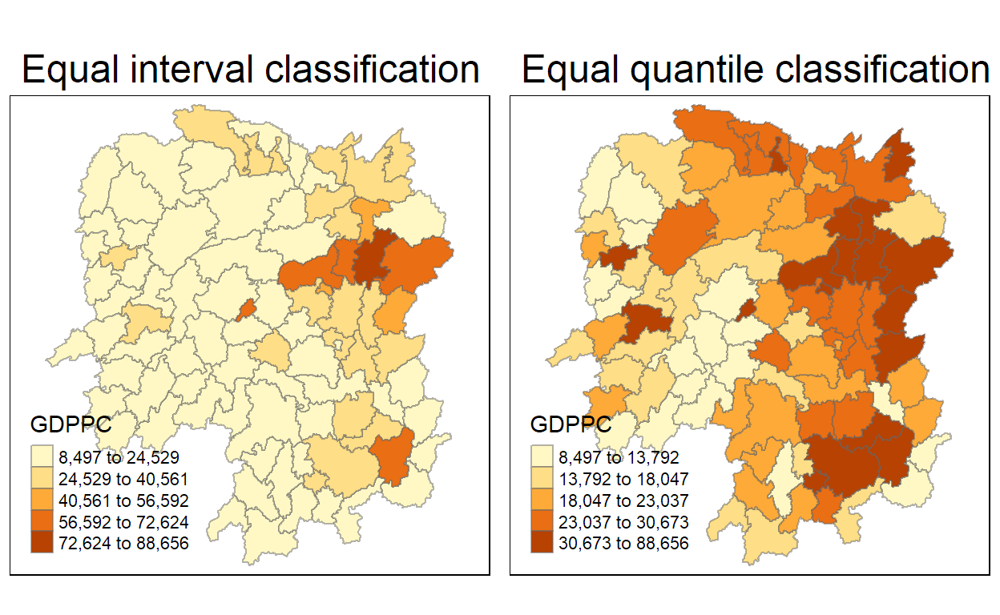
3. Global Spatial Autocorrelation
a. Computing Queen Contiguity Spatial Weights matrix
wm_q <- poly2nb(hunan,
queen=TRUE) #if queen=FALSE, it is using rook
summary(wm_q)
Neighbour list object:
Number of regions: 88
Number of nonzero links: 448
Percentage nonzero weights: 5.785124
Average number of links: 5.090909
Link number distribution:
1 2 3 4 5 6 7 8 9 11
2 2 12 16 24 14 11 4 2 1
2 least connected regions:
30 65 with 1 link
1 most connected region:
85 with 11 links- The summary report above shows that there are 88 area units in Hunan. The most connected area unit has 11 neighbours. There are two area units with only one heighbours.
b. Row-standardised weights matrix
rswm_q <- nb2listw(wm_q,
style="W",
zero.policy = TRUE)
rswm_q
Characteristics of weights list object:
Neighbour list object:
Number of regions: 88
Number of nonzero links: 448
Percentage nonzero weights: 5.785124
Average number of links: 5.090909
Weights style: W
Weights constants summary:
n nn S0 S1 S2
W 88 7744 88 37.86334 365.9147- style can take values W, B, C, U, minmax and S. B is the basic binary coding, W is row standardised (sums over all links to n), C is globally standardised (sums over all links to n), U is equal to C divided by the number of neighbours (sums over all links to unity), while S is the variance-stabilizing coding scheme proposed by Tiefelsdorf et al.1999, p.167-168 (sums over all links to n).
- If zero policy is set to TRUE, weights vectors of zero length are inserted for regions without neighbour in the neighbours list. These will in turn generate lag values of zero, equivalent to the sum of products of the zero row t(rep(0, length=length(neighbours))) %*% x, for arbitrary numerical vector x of length length(neighbours). The spatially lagged value of x for the zero-neighbour region will then be zero, which may (or may not) be a sensible choice.
c.Global Spatial Autocorrelation: Morans I
performs Morans I statistical testing
moran.test(hunan$GDPPC,
listw=rswm_q,
zero.policy = TRUE,
na.action=na.omit)
Moran I test under randomisation
data: hunan$GDPPC
weights: rswm_q
Moran I statistic standard deviate = 4.7351, p-value =
1.095e-06
alternative hypothesis: greater
sample estimates:
Moran I statistic Expectation Variance
0.300749970 -0.011494253 0.004348351 performs permutation test for Morans I statistic
set.seed(1234)
bperm= moran.mc(hunan$GDPPC,
listw=rswm_q,
nsim=999,
zero.policy = TRUE,
na.action=na.omit)
bperm
Monte-Carlo simulation of Moran I
data: hunan$GDPPC
weights: rswm_q
number of simulations + 1: 1000
statistic = 0.30075, observed rank = 1000, p-value = 0.001
alternative hypothesis: greaterVisualising Monte Carlo Morans I: histogram
mean(bperm$res[1:999])
[1] -0.01504572var(bperm$res[1:999])
[1] 0.004371574summary(bperm$res[1:999])
Min. 1st Qu. Median Mean 3rd Qu. Max.
-0.18339 -0.06168 -0.02125 -0.01505 0.02611 0.27593 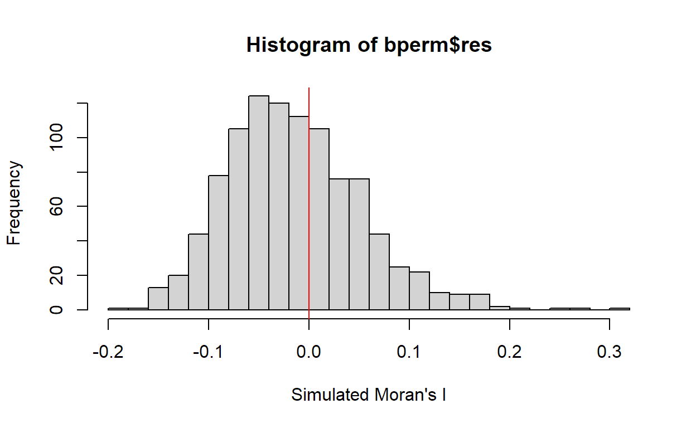
d.Global Spatial Autocorrelation: Gearys
performs Gearys C test
geary.test(hunan$GDPPC, listw=rswm_q)
Geary C test under randomisation
data: hunan$GDPPC
weights: rswm_q
Geary C statistic standard deviate = 3.6108, p-value =
0.0001526
alternative hypothesis: Expectation greater than statistic
sample estimates:
Geary C statistic Expectation Variance
0.6907223 1.0000000 0.0073364 performs permutation test for Gearys C statistic
set.seed(1234)
bperm=geary.mc(hunan$GDPPC,
listw=rswm_q,
nsim=999)
bperm
Monte-Carlo simulation of Geary C
data: hunan$GDPPC
weights: rswm_q
number of simulations + 1: 1000
statistic = 0.69072, observed rank = 1, p-value = 0.001
alternative hypothesis: greaterVisualising the Monte Carlo Gearys C: histogram
mean(bperm$res[1:999])
[1] 1.004402var(bperm$res[1:999])
[1] 0.007436493summary(bperm$res[1:999])
Min. 1st Qu. Median Mean 3rd Qu. Max.
0.7142 0.9502 1.0052 1.0044 1.0595 1.2722 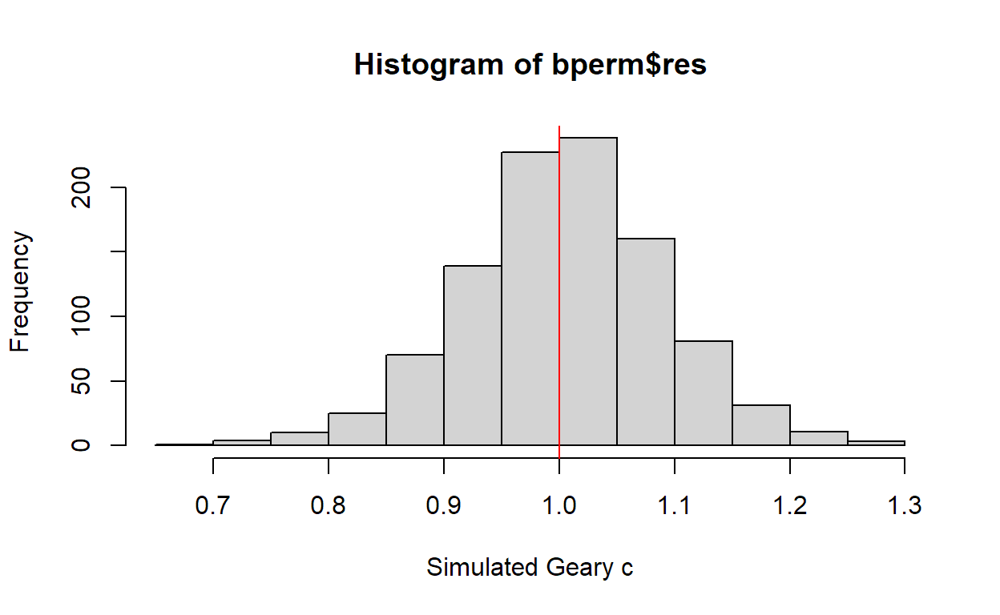
e. Spatial Correlogram
- Spatial correlograms show how correlated are pairs of spatial observations when you increase the distance (lag) between them - they are plots of some index of autocorrelation (Morans I or Gearys c) against distance.
Compute Morans I correlogram
#compute a 6-lag spatial correlogram of GDPPC. The global spatial autocorrelation used in Morans I. MI_corr <- sp.correlogram(wm_q,
hunan$GDPPC,
order=6,
method="I",
style="W")
plot(MI_corr)
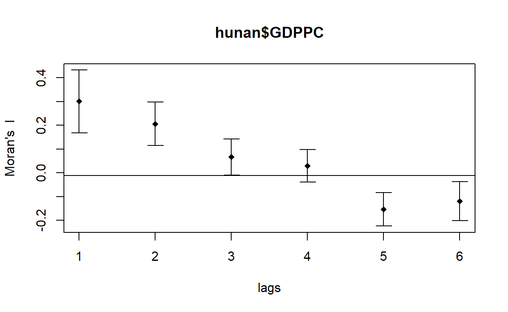
- By plotting the output might not allow us to provide complete interpretation. This is because not all autocorrelation values are statistically significant. Hence, it is important for us to examine the full analysis report by printing out the analysis results.
print(MI_corr)
Spatial correlogram for hunan$GDPPC
method: Moran's I
estimate expectation variance standard deviate
1 (88) 0.3007500 -0.0114943 0.0043484 4.7351
2 (88) 0.2060084 -0.0114943 0.0020962 4.7505
3 (88) 0.0668273 -0.0114943 0.0014602 2.0496
4 (88) 0.0299470 -0.0114943 0.0011717 1.2107
5 (88) -0.1530471 -0.0114943 0.0012440 -4.0134
6 (88) -0.1187070 -0.0114943 0.0016791 -2.6164
Pr(I) two sided
1 (88) 2.189e-06 ***
2 (88) 2.029e-06 ***
3 (88) 0.040400 *
4 (88) 0.226015
5 (88) 5.984e-05 ***
6 (88) 0.008886 **
---
Signif. codes: 0 '***' 0.001 '**' 0.01 '*' 0.05 '.' 0.1 ' ' 1Compute Gearys C correlogram and plot
#compute a 6-lag spatial correlogram of GDPPC. The global spatial autocorrelation used in Gearys C.GC_corr <- sp.correlogram(wm_q,
hunan$GDPPC,
order=6,
method="C",
style="W")
plot(GC_corr)
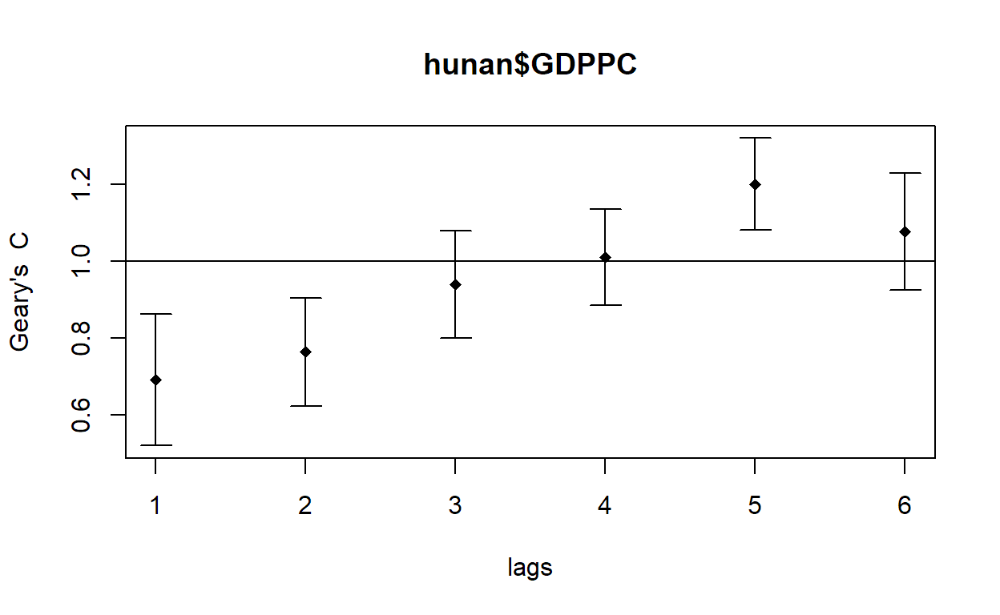
print(GC_corr)
Spatial correlogram for hunan$GDPPC
method: Geary's C
estimate expectation variance standard deviate
1 (88) 0.6907223 1.0000000 0.0073364 -3.6108
2 (88) 0.7630197 1.0000000 0.0049126 -3.3811
3 (88) 0.9397299 1.0000000 0.0049005 -0.8610
4 (88) 1.0098462 1.0000000 0.0039631 0.1564
5 (88) 1.2008204 1.0000000 0.0035568 3.3673
6 (88) 1.0773386 1.0000000 0.0058042 1.0151
Pr(I) two sided
1 (88) 0.0003052 ***
2 (88) 0.0007220 ***
3 (88) 0.3892612
4 (88) 0.8757128
5 (88) 0.0007592 ***
6 (88) 0.3100407
---
Signif. codes: 0 '***' 0.001 '**' 0.01 '*' 0.05 '.' 0.1 ' ' 14. Cluster and Outlier Analysis
- Local Indicators of Spatial Association or LISA are statistics that evaluate the existence of clusters in the spatial arrangement of a given variable. For instance if we are studying cancer rates among census tracts in a given city local clusters in the rates mean that there are areas that have higher or lower rates than is to be expected by chance alone; that is, the values occurring are above or below those of a random distribution in space.
- In this section, you will learn how to apply appropriate Local Indicators for Spatial Association (LISA), especially local MoranI to detect cluster(where are the clusters) and/or outlier from GDP per capita 2012 of Hunan Province, PRC.
a. Computing local Morans I
# localmoran() function computes Ii values, given a set of zi values and a listw object providing neighbour weighting information for the polygon associated with the zi values.
fips <- order(hunan$County)
localMI <- localmoran(hunan$GDPPC, rswm_q)
head(localMI)
Ii E.Ii Var.Ii Z.Ii Pr(z != E(Ii))
1 -0.001468468 -2.815006e-05 4.723841e-04 -0.06626904 0.9471636
2 0.025878173 -6.061953e-04 1.016664e-02 0.26266425 0.7928094
3 -0.011987646 -5.366648e-03 1.133362e-01 -0.01966705 0.9843090
4 0.001022468 -2.404783e-07 5.105969e-06 0.45259801 0.6508382
5 0.014814881 -6.829362e-05 1.449949e-03 0.39085814 0.6959021
6 -0.038793829 -3.860263e-04 6.475559e-03 -0.47728835 0.6331568- Note: localmoran() function returns a matrix of values whose columns are:
- Ii: the local Morans I statistics
- E.Ii: the expectation of local moran statistic under the randomisation hypothesis
- Var.Ii: the variance of local moran statistic under the randomisation hypothesis
- Z.Ii:the standard deviate of local moran statistic Pr(): the p-value of local moran statistic
list the content of the local Moran matrix
printCoefmat(data.frame(localMI[fips,], row.names=hunan$County[fips]), check.names=FALSE)
Ii E.Ii Var.Ii Z.Ii
Anhua -2.2493e-02 -5.0048e-03 5.8235e-02 -7.2467e-02
Anren -3.9932e-01 -7.0111e-03 7.0348e-02 -1.4791e+00
Anxiang -1.4685e-03 -2.8150e-05 4.7238e-04 -6.6269e-02
Baojing 3.4737e-01 -5.0089e-03 8.3636e-02 1.2185e+00
Chaling 2.0559e-02 -9.6812e-04 2.7711e-02 1.2932e-01
Changning -2.9868e-05 -9.0010e-09 1.5105e-07 -7.6828e-02
Changsha 4.9022e+00 -2.1348e-01 2.3194e+00 3.3590e+00
Chengbu 7.3725e-01 -1.0534e-02 2.2132e-01 1.5895e+00
Chenxi 1.4544e-01 -2.8156e-03 4.7116e-02 6.8299e-01
Cili 7.3176e-02 -1.6747e-03 4.7902e-02 3.4200e-01
Dao 2.1420e-01 -2.0824e-03 4.4123e-02 1.0297e+00
Dongan 1.5210e-01 -6.3485e-04 1.3471e-02 1.3159e+00
Dongkou 5.2918e-01 -6.4461e-03 1.0748e-01 1.6338e+00
Fenghuang 1.8013e-01 -6.2832e-03 1.3257e-01 5.1198e-01
Guidong -5.9160e-01 -1.3086e-02 3.7003e-01 -9.5104e-01
Guiyang 1.8240e-01 -3.6908e-03 3.2610e-02 1.0305e+00
Guzhang 2.8466e-01 -8.5054e-03 1.4152e-01 7.7931e-01
Hanshou 2.5878e-02 -6.0620e-04 1.0167e-02 2.6266e-01
Hengdong 9.9964e-03 -4.9063e-04 6.7742e-03 1.2742e-01
Hengnan 2.8064e-02 -3.2160e-04 3.7597e-03 4.6294e-01
Hengshan -5.8201e-03 -3.0437e-05 5.1076e-04 -2.5618e-01
Hengyang 6.2997e-02 -1.3046e-03 2.1865e-02 4.3486e-01
Hongjiang 1.8790e-01 -2.3019e-03 3.1725e-02 1.0678e+00
Huarong -1.5389e-02 -1.8667e-03 8.1030e-02 -4.7503e-02
Huayuan 8.3772e-02 -8.5569e-04 2.4495e-02 5.4072e-01
Huitong 2.5997e-01 -5.2447e-03 1.1077e-01 7.9685e-01
Jiahe -1.2431e-01 -3.0550e-03 5.1111e-02 -5.3633e-01
Jianghua 2.8651e-01 -3.8280e-03 8.0968e-02 1.0204e+00
Jiangyong 2.4337e-01 -2.7082e-03 1.1746e-01 7.1800e-01
Jingzhou 1.8270e-01 -8.5106e-04 2.4363e-02 1.1759e+00
Jinshi -1.1988e-02 -5.3666e-03 1.1334e-01 -1.9667e-02
Jishou -2.8680e-01 -2.6305e-03 4.4028e-02 -1.3543e+00
Lanshan 6.3334e-02 -9.6365e-04 2.0441e-02 4.4972e-01
Leiyang 1.1581e-02 -1.4948e-04 2.5082e-03 2.3422e-01
Lengshuijiang -1.7903e+00 -8.2129e-02 2.1598e+00 -1.1623e+00
Li 1.0225e-03 -2.4048e-07 5.1060e-06 4.5260e-01
Lianyuan -1.4672e-01 -1.8983e-03 1.9145e-02 -1.0467e+00
Liling 1.3774e+00 -1.5097e-02 4.2601e-01 2.1335e+00
Linli 1.4815e-02 -6.8294e-05 1.4499e-03 3.9086e-01
Linwu -2.4621e-03 -9.0703e-06 1.9258e-04 -1.7676e-01
Linxiang 6.5904e-02 -2.9028e-03 2.5470e-01 1.3634e-01
Liuyang 3.3688e+00 -7.7502e-02 1.5180e+00 2.7972e+00
Longhui 8.0801e-01 -1.1377e-02 1.5538e-01 2.0787e+00
Longshan 7.5663e-01 -1.1100e-02 3.1449e-01 1.3690e+00
Luxi 1.8177e-01 -2.4855e-03 3.4249e-02 9.9561e-01
Mayang 2.1852e-01 -5.8773e-03 9.8049e-02 7.1663e-01
Miluo 1.8704e+00 -1.6927e-02 2.7925e-01 3.5715e+00
Nan -9.5789e-03 -4.9497e-04 6.8341e-03 -1.0988e-01
Ningxiang 1.5607e+00 -7.3878e-02 8.0012e-01 1.8274e+00
Ningyuan 2.0910e-01 -7.0884e-03 8.2306e-02 7.5356e-01
Pingjiang -9.8964e-01 -2.6457e-03 5.6027e-02 -4.1698e+00
Qidong 1.1806e-01 -2.1207e-03 2.4747e-02 7.6396e-01
Qiyang 6.1966e-02 -7.3374e-04 8.5743e-03 6.7712e-01
Rucheng -3.6992e-01 -8.8999e-03 2.5272e-01 -7.1814e-01
Sangzhi 2.5053e-01 -4.9470e-03 6.8000e-02 9.7972e-01
Shaodong -3.2659e-02 -3.6592e-05 5.0546e-04 -1.4510e+00
Shaoshan 2.1223e+00 -5.0227e-02 1.3668e+00 1.8583e+00
Shaoyang 5.9499e-01 -1.1253e-02 1.3012e-01 1.6807e+00
Shimen -3.8794e-02 -3.8603e-04 6.4756e-03 -4.7729e-01
Shuangfeng 9.2835e-03 -2.2867e-03 3.1516e-02 6.5174e-02
Shuangpai 8.0591e-02 -3.1366e-04 8.9838e-03 8.5358e-01
Suining 3.7585e-01 -3.5933e-03 4.1870e-02 1.8544e+00
Taojiang -2.5394e-01 -1.2395e-03 1.4477e-02 -2.1002e+00
Taoyuan 1.4729e-02 -1.2039e-04 8.5103e-04 5.0903e-01
Tongdao 4.6482e-01 -6.9870e-03 1.9879e-01 1.0582e+00
Wangcheng 4.4220e+00 -1.1067e-01 1.3596e+00 3.8873e+00
Wugang 7.1003e-01 -7.8144e-03 1.0710e-01 2.1935e+00
Xiangtan 2.4530e-01 -3.6457e-04 3.2319e-03 4.3213e+00
Xiangxiang 2.6271e-01 -1.2703e-03 2.1290e-02 1.8092e+00
Xiangyin 5.4525e-01 -4.7442e-03 7.9236e-02 1.9539e+00
Xinhua 1.1810e-01 -6.2649e-03 8.6001e-02 4.2409e-01
Xinhuang 1.5725e-01 -4.1820e-03 3.6648e-01 2.6667e-01
Xinning 6.8928e-01 -9.6674e-03 2.0328e-01 1.5502e+00
Xinshao 5.7578e-02 -8.5932e-03 1.1769e-01 1.9289e-01
Xintian -7.4050e-03 -5.1493e-03 1.0877e-01 -6.8395e-03
Xupu 3.2406e-01 -5.7468e-03 5.7735e-02 1.3726e+00
Yanling -6.9021e-02 -5.9211e-04 9.9306e-03 -6.8667e-01
Yizhang -2.6844e-01 -2.2463e-03 4.7588e-02 -1.2202e+00
Yongshun 6.3064e-01 -1.1350e-02 1.8830e-01 1.4795e+00
Yongxing 4.3411e-01 -9.0735e-03 1.5088e-01 1.1409e+00
You 7.8750e-02 -7.2728e-03 1.2116e-01 2.4714e-01
Yuanjiang 2.0004e-04 -1.7760e-04 2.9798e-03 6.9181e-03
Yuanling 8.7298e-03 -2.2981e-06 2.3221e-05 1.8121e+00
Yueyang 4.1189e-02 -1.9768e-04 2.3113e-03 8.6085e-01
Zhijiang 1.0476e-01 -7.8123e-04 1.3100e-02 9.2214e-01
Zhongfang -2.2685e-01 -2.1455e-03 3.5927e-02 -1.1855e+00
Zhuzhou 3.2864e-01 -5.2432e-04 7.2391e-03 3.8688e+00
Zixing -7.6849e-01 -8.8210e-02 9.4057e-01 -7.0144e-01
Pr.z....E.Ii..
Anhua 0.9422
Anren 0.1391
Anxiang 0.9472
Baojing 0.2230
Chaling 0.8971
Changning 0.9388
Changsha 0.0008
Chengbu 0.1119
Chenxi 0.4946
Cili 0.7324
Dao 0.3032
Dongan 0.1882
Dongkou 0.1023
Fenghuang 0.6087
Guidong 0.3416
Guiyang 0.3028
Guzhang 0.4358
Hanshou 0.7928
Hengdong 0.8986
Hengnan 0.6434
Hengshan 0.7978
Hengyang 0.6637
Hongjiang 0.2856
Huarong 0.9621
Huayuan 0.5887
Huitong 0.4255
Jiahe 0.5917
Jianghua 0.3076
Jiangyong 0.4728
Jingzhou 0.2396
Jinshi 0.9843
Jishou 0.1756
Lanshan 0.6529
Leiyang 0.8148
Lengshuijiang 0.2451
Li 0.6508
Lianyuan 0.2952
Liling 0.0329
Linli 0.6959
Linwu 0.8597
Linxiang 0.8916
Liuyang 0.0052
Longhui 0.0376
Longshan 0.1710
Luxi 0.3194
Mayang 0.4736
Miluo 0.0004
Nan 0.9125
Ningxiang 0.0676
Ningyuan 0.4511
Pingjiang 0.0000
Qidong 0.4449
Qiyang 0.4983
Rucheng 0.4727
Sangzhi 0.3272
Shaodong 0.1468
Shaoshan 0.0631
Shaoyang 0.0928
Shimen 0.6332
Shuangfeng 0.9480
Shuangpai 0.3933
Suining 0.0637
Taojiang 0.0357
Taoyuan 0.6107
Tongdao 0.2900
Wangcheng 0.0001
Wugang 0.0283
Xiangtan 0.0000
Xiangxiang 0.0704
Xiangyin 0.0507
Xinhua 0.6715
Xinhuang 0.7897
Xinning 0.1211
Xinshao 0.8470
Xintian 0.9945
Xupu 0.1699
Yanling 0.4923
Yizhang 0.2224
Yongshun 0.1390
Yongxing 0.2539
You 0.8048
Yuanjiang 0.9945
Yuanling 0.0700
Yueyang 0.3893
Zhijiang 0.3565
Zhongfang 0.2358
Zhuzhou 0.0001
Zixing 0.4830b. Mapping the local Morans I
append the local Morans I dataframe (i.e.localMI) onto hunan SpatialPolygonDataFrame
hunan.localMI <- cbind(hunan,localMI) %>%
rename(Pr.Ii = Pr.z....E.Ii..)
Mapping local Morans I values
tm_shape(hunan.localMI) +
tm_fill(col = "Ii",
style = "pretty",
palette = "RdBu",
title = "local moran statistics") +
tm_borders(alpha = 0.5)

Mapping local Morans I p-values
tm_shape(hunan.localMI) +
tm_fill(col = "Pr.Ii",
breaks=c(-Inf, 0.001, 0.01, 0.05, 0.1, Inf),
palette="-Blues",
title = "local Moran's I p-values") +
tm_borders(alpha = 0.5)
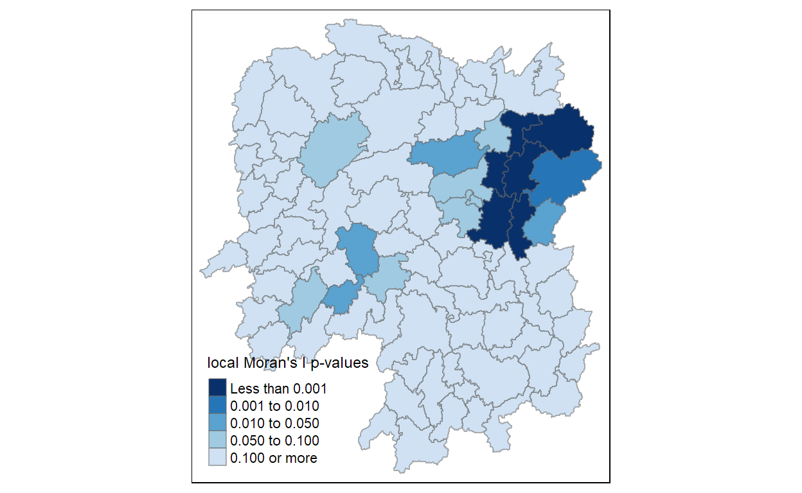
Mapping both local Morans I values and p-values
localMI.map <- tm_shape(hunan.localMI) +
tm_fill(col = "Ii",
style = "pretty",
title = "local moran statistics") +
tm_borders(alpha = 0.5)
pvalue.map <- tm_shape(hunan.localMI) +
tm_fill(col = "Pr.Ii",
breaks=c(-Inf, 0.001, 0.01, 0.05, 0.1, Inf),
palette="-Blues",
title = "local Moran's I p-values") +
tm_borders(alpha = 0.5)
tmap_arrange(localMI.map, pvalue.map, asp=1, ncol=2)
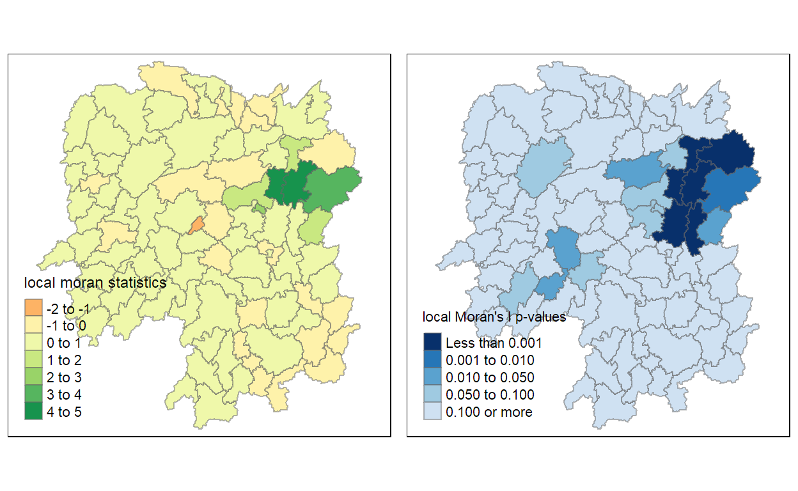
c.Creating a LISA Cluster Map
- The LISA Cluster Map shows the significant locations color coded by type of spatial autocorrelation.
Plotting Moran scatterplot
- The Moran scatterplot is an illustration of the relationship between the values of the chosen attribute at each location and the average value of the same attribute at neighboring locations.
nci <- moran.plot(hunan$GDPPC, rswm_q,
labels=as.character(hunan$County),
xlab="GDPPC 2012",
ylab="Spatially Lag GDPPC 2012")
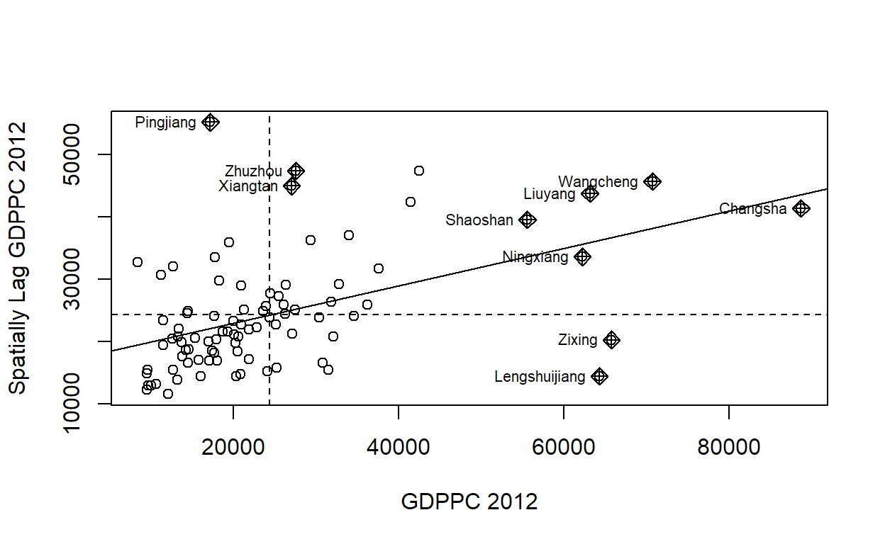
- Notice that the plot is split in 4 quadrants. The top right corner belongs to areas that have high GDPPC and are surrounded by other areas that have the average level of GDPPC. This are the high-high locations in the lesson slide.
Plotting Moran scatterplot with standardised variable
#First we will use scale() to centers and scales the variable. Here centering is done by subtracting the mean (omitting NAs) the corresponding columns, and scaling is done by dividing the (centered) variable by their standard deviations.
#The as.vector() added to the end is to make sure that the data type we get out of this is a vector, that map neatly into out dataframe.
hunan$Z.GDPPC <- scale(hunan$GDPPC) %>% as.vector
nci2 <- moran.plot(hunan$Z.GDPPC, rswm_q,
labels=as.character(hunan$County),
xlab="z-GDPPC 2012",
ylab="Spatially Lag z-GDPPC 2012")
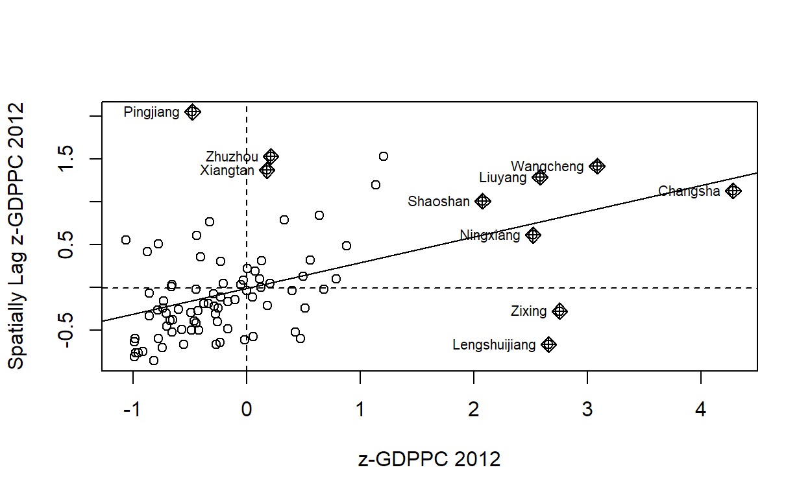

Preparing LISA map classes
quadrant <- vector(mode="numeric",length=nrow(localMI))
DV <- hunan$GDPPC - mean(hunan$GDPPC) # center the variable of interest around its mean
C_mI <- localMI[,1] - mean(localMI[,1]) # center the local Morans around the meansignif <- 0.05 # set a statistical significance level for the local Moran
# These four command lines define the high-high, low-low, low-high and high-low categories
quadrant[DV >0 & C_mI>0] <- 4
quadrant[DV <0 & C_mI<0] <- 1
quadrant[DV <0 & C_mI>0] <- 2
quadrant[DV >0 & C_mI<0] <- 3
#places non-significant Moran in the category 0
quadrant[localMI[,5]>signif] <- 0
Plotting LISA map
hunan.localMI$quadrant <- quadrant
colors <- c("#ffffff", "#2c7bb6", "#abd9e9", "#fdae61", "#d7191c")
clusters <- c("insignificant", "low-low", "low-high", "high-low", "high-high")
tm_shape(hunan.localMI) +
tm_fill(col = "quadrant",
style = "cat",
palette = colors[c(sort(unique(quadrant)))+1],
labels = clusters[c(sort(unique(quadrant)))+1],
popup.vars = c("")) +
tm_view(set.zoom.limits = c(11,17)) +
tm_borders(alpha=0.5)
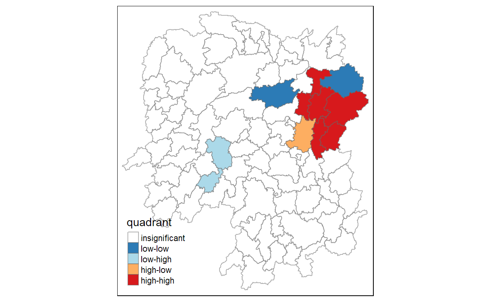
plot both the local Morans I values map and its corresponding p-values map
gdppc <- qtm(hunan, "GDPPC")
hunan.localMI$quadrant <- quadrant
colors <- c("#ffffff", "#2c7bb6", "#abd9e9", "#fdae61", "#d7191c")
clusters <- c("insignificant", "low-high", "low-low", "high-low", "high-high")
LISAmap <- tm_shape(hunan.localMI) +
tm_fill(col = "quadrant",
style = "cat",
palette = colors[c(sort(unique(quadrant)))+1],
labels = clusters[c(sort(unique(quadrant)))+1],
popup.vars = c("")) +
tm_view(set.zoom.limits = c(11,17)) +
tm_borders(alpha=0.5)
tmap_arrange(gdppc, LISAmap, asp=1, ncol=2)
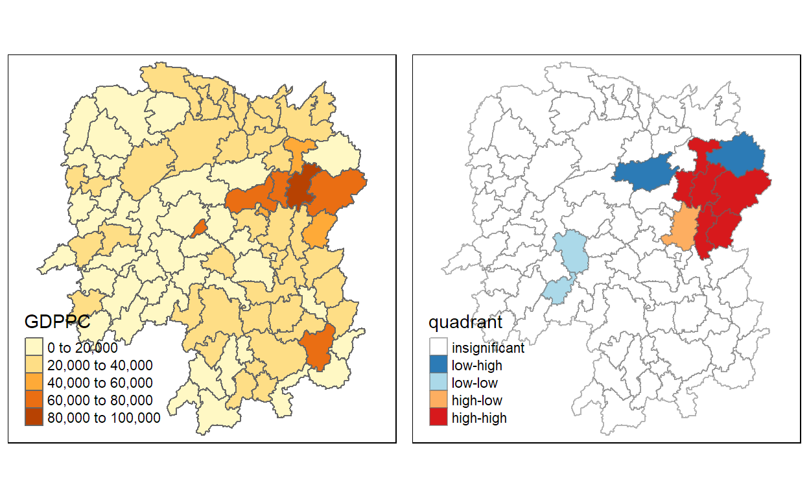
5. Hot Spot and Cold Spot Area Analysis
- Beside detecting cluster and outliers, localised spatial statistics can be also used to detect hot spot and/or cold spot areas.
- The term hot spot has been used generically across disciplines to describe a region or value that is higher relative to its surroundings (Lepers et al 2005, Aben et al 2012, Isobe et al 2015).
- An alternative spatial statistics to detect spatial anomalies is the Getis and Ords G-statistics (Getis and Ord, 1972; Ord and Getis, 1995). It looks at neighbours within a defined proximity to identify where either high or low values clutser spatially. Here, statistically significant hot-spots are recognised as areas of high values where other areas within a neighbourhood range also share high values too.
a. Deriving distance-based weight matrix
- First, we need to define a new set of neighbours. Whist the spatial autocorrelation considered units which shared borders, for Getis-Ord we are defining neighbours based on distance.
- There are two type of distance-based proximity matrix, they are:
- fixed diatnce weight matrix
- adaptive distance weight matrix
Deriving the centroid
- We will need points to associate with each polygon before we can make our connectivity graph. It will be a little more complicated than just running st_centroid() on the sf object: us.bound. We do this method because we want to reduce the time complexity for running st_centroid().
longitude <- map_dbl(hunan$geometry, ~st_centroid(.x)[[1]])
latitude <- map_dbl(hunan$geometry, ~st_centroid(.x)[[2]])
coords <- cbind(longitude, latitude)
Determine the cut-off distance
#coords <- coordinates(hunan)
#Return a matrix with the indices of points belonging to the set of the k nearest neighbours of each other
#Convert the knn object returned by knearneigh() into a neighbours list of class nb with a list of integer vectors containing neighbour region number ids
k1 <- knn2nb(knearneigh(coords))
#Return the length of neighbour relationship edges
#The function returns in the units of the coordinates if the coordinates are projected, in km otherwise.
k1dists <- unlist(nbdists(k1, coords, longlat = TRUE))
summary(k1dists)
Min. 1st Qu. Median Mean 3rd Qu. Max.
24.79 32.57 38.01 39.07 44.52 61.79 - The summary report shows that the largest first nearest neighbour distance is 61.79 km, so using this as the upper threshold gives certainty that all units will have at least one neighbour.
Computing fixed distance weight matrix
wm_d62 <- dnearneigh(coords, 0, 62, longlat = TRUE)
wm_d62
Neighbour list object:
Number of regions: 88
Number of nonzero links: 324
Percentage nonzero weights: 4.183884
Average number of links: 3.681818 #convert the nb object into spatial weights object.
wm62_lw <- nb2listw(wm_d62, style = 'B')
summary(wm62_lw)
Characteristics of weights list object:
Neighbour list object:
Number of regions: 88
Number of nonzero links: 324
Percentage nonzero weights: 4.183884
Average number of links: 3.681818
Link number distribution:
1 2 3 4 5 6
6 15 14 26 20 7
6 least connected regions:
6 15 30 32 56 65 with 1 link
7 most connected regions:
21 28 35 45 50 52 82 with 6 links
Weights style: B
Weights constants summary:
n nn S0 S1 S2
B 88 7744 324 648 5440Computing adaptive distance weight matrix
- One of the characteristics of fixed distance weight matrix is that more densely settled areas (usually the urban areas) tend to have more neighbours and the less densely settled areas (usually the rural counties) tend to have lesser neighbours. Having many neighbours smoothes the neighbour relationship across more neighbours.
- It is possible to control the numbers of neighbours directly using k-nearest neighbours, either accepting asymmetric neighbours or imposing symmetry
knn <- knn2nb(knearneigh(coords, k=8)) knnNeighbour list object: Number of regions: 88 Number of nonzero links: 704 Percentage nonzero weights: 9.090909 Average number of links: 8 Non-symmetric neighbours list# convert the nb object into spatial weights object. knn_lw <- nb2listw(knn, style = 'B') summary(knn_lw)Characteristics of weights list object: Neighbour list object: Number of regions: 88 Number of nonzero links: 704 Percentage nonzero weights: 9.090909 Average number of links: 8 Non-symmetric neighbours list Link number distribution: 8 88 88 least connected regions: 1 2 3 4 5 6 7 8 9 10 11 12 13 14 15 16 17 18 19 20 21 22 23 24 25 26 27 28 29 30 31 32 33 34 35 36 37 38 39 40 41 42 43 44 45 46 47 48 49 50 51 52 53 54 55 56 57 58 59 60 61 62 63 64 65 66 67 68 69 70 71 72 73 74 75 76 77 78 79 80 81 82 83 84 85 86 87 88 with 8 links 88 most connected regions: 1 2 3 4 5 6 7 8 9 10 11 12 13 14 15 16 17 18 19 20 21 22 23 24 25 26 27 28 29 30 31 32 33 34 35 36 37 38 39 40 41 42 43 44 45 46 47 48 49 50 51 52 53 54 55 56 57 58 59 60 61 62 63 64 65 66 67 68 69 70 71 72 73 74 75 76 77 78 79 80 81 82 83 84 85 86 87 88 with 8 links Weights style: B Weights constants summary: n nn S0 S1 S2 B 88 7744 704 1300 23014b. Computing Gi statistics
i) Gi statistics using fixed distance
fips <- order(hunan$County) gi.fixed <- localG(hunan$GDPPC, wm62_lw) gi.fixed[1] 0.436075843 -0.265505650 -0.073033665 0.413017033 0.273070579 [6] -0.377510776 2.863898821 2.794350420 5.216125401 0.228236603 [11] 0.951035346 -0.536334231 0.176761556 1.195564020 -0.033020610 [16] 1.378081093 -0.585756761 -0.419680565 0.258805141 0.012056111 [21] -0.145716531 -0.027158687 -0.318615290 -0.748946051 -0.961700582 [26] -0.796851342 -1.033949773 -0.460979158 -0.885240161 -0.266671512 [31] -0.886168613 -0.855476971 -0.922143185 -1.162328599 0.735582222 [36] -0.003358489 -0.967459309 -1.259299080 -1.452256513 -1.540671121 [41] -1.395011407 -1.681505286 -1.314110709 -0.767944457 -0.192889342 [46] 2.720804542 1.809191360 -1.218469473 -0.511984469 -0.834546363 [51] -0.908179070 -1.541081516 -1.192199867 -1.075080164 -1.631075961 [56] -0.743472246 0.418842387 0.832943753 -0.710289083 -0.449718820 [61] -0.493238743 -1.083386776 0.042979051 0.008596093 0.136337469 [66] 2.203411744 2.690329952 4.453703219 -0.340842743 -0.129318589 [71] 0.737806634 -1.246912658 0.666667559 1.088613505 -0.985792573 [76] 1.233609606 -0.487196415 1.626174042 -1.060416797 0.425361422 [81] -0.837897118 -0.314565243 0.371456331 4.424392623 -0.109566928 [86] 1.364597995 -1.029658605 -0.718000620 attr(,"gstari") [1] FALSE attr(,"call") localG(x = hunan$GDPPC, listw = wm62_lw) attr(,"class") [1] "localG"- The output of localG() is a vector of G or Gstar values, with attributes gstari set to TRUE or FALSE, call set to the function call, and class localG.
- The Gi statistics is represented as a Z-score. Greater values represent a greater intensity of clustering and the direction (positive or negative) indicates high or low clusters.
i) join the Gi values to their corresponding hunan sf data frame
- In fact, the code chunk above performs three tasks. First, it convert the output vector (i.e.gi.fixed) into r matrix object by using as.matrix(). Next, cbind() is used to join hun@data and gi.fixed matrix to produce a new SpatialPolygonDataFrame called hunan.gi. Lastly, the field name of the gi values is renamed to gstat_fixed by using names().
i) Mapping Gi values with fixed distance weights
gdppc <- qtm(hunan, "GDPPC") Gimap <-tm_shape(hunan.gi) + tm_fill(col = "gstat_fixed", style = "pretty", palette="-RdBu", title = "local Gi") + tm_borders(alpha = 0.5) tmap_arrange(gdppc, Gimap, asp=1, ncol=2)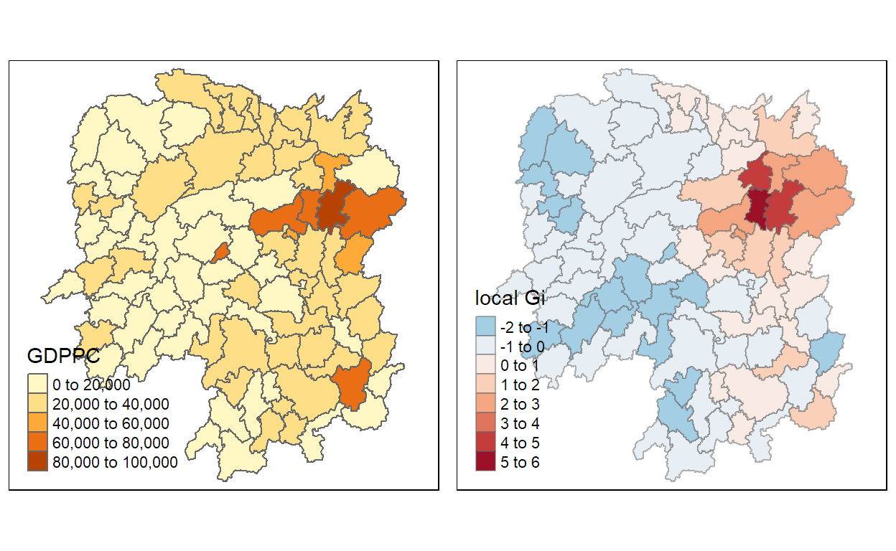
ii) Gi statistics using adaptive distance
ii) Mapping Gi values with adaptive distance weights
gdppc <- qtm(hunan, "GDPPC") Gimap <- tm_shape(hunan.gi) + tm_fill(col = "gstat_adaptive", style = "pretty", palette="-RdBu", title = "local Gi") + tm_borders(alpha = 0.5) tmap_arrange(gdppc, Gimap, asp=1, ncol=2)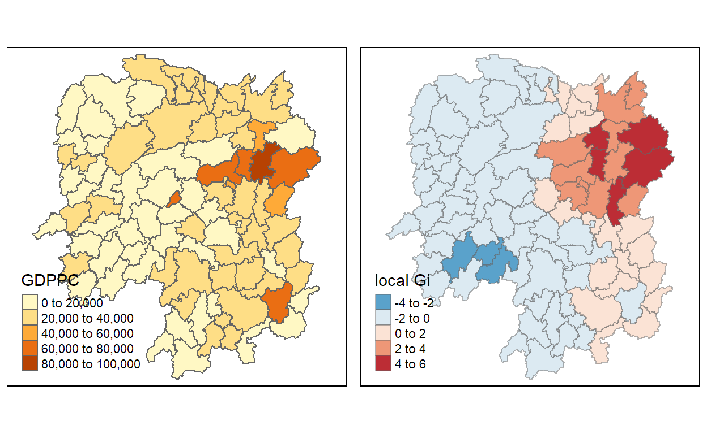